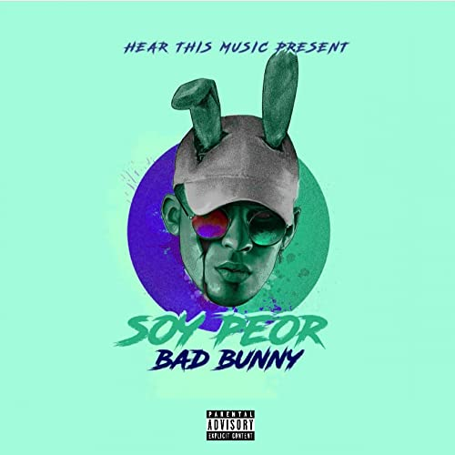

Mientras trabajaba como empaquetador en los Supermercados Econo en Vega Baja durante 2016, Bad Bunny lanzaba música como un artista independiente en SoundCloud, donde su canción «Diles» llamó la atención del productor DJ Luian quien lo contrató para su sello discográfico Hear This Music. DJ Luian introdujo a Bad Bunny al equipo de productores Mambo Kingz, quienes estaban intrigados por la experimentación de la música y la moda de Benito.
Desde entonces, él logró entrar varias veces a la lista de Estados Unidos Hot Latin Songs. Su primer éxito, el sencillo «Soy Peor», alcanzó el puesto 22 en la lista Hot Latin Songs y estableció a Bad Bunny como un pionero en la escena del trap latino. Diez meses después de la publicación del video oficial de «Soy Peor», alcanzó las 330 millones de reproducciones en YouTube.
En 2018, Cardi B colaboró con Bad Bunny y J Balvin en el sencillo «I Like It», tema que alcanzó el primer puesto en Billboard Hot 100 de Estados Unidos, y se convirtió en el primer sencillo de Bad Bunny en ser número uno en dicha lista, además de recibir su nominación al Grammy por Grabación del Año.
Bad Bunny lanzó su álbum debut X 100pre en la víspera de Navidad del 2018 poco después de dejar el sello de DJ Luian Hear this Music, revelando en una transmisión en vivo de Instagram que nunca se le permitió hacer un álbum y también confesando que en realidad produjo él mismo su propia música.